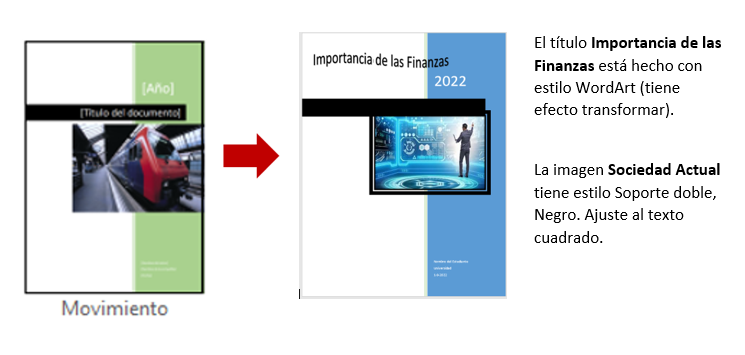

Formato Básico en Word

A. Aplicar de manera individual, formato básico (tipos de fuentes, tamaño, alineación, viñetas, texto en columnas) a un documento; además de modificar el diseño de página: márgenes, orientación de la hoja.
DOCUMENTOS DE APOYO PARA BAJARLOS A TU EQUIPO: TEXTO BASE, MODELO FINAL, Imagen sociedad actual, imagen Sociedad 2.
Para el desarrollo de la actividad seguir las siguientes instrucciones.
Bajar a tu máquina el documento TEXTO BASE y guardarlo con el nombre EC2-ACT8_9-APELLIDOS. A ese documento tendrán que hacerle los siguientes cambios para que al final les quede como el documento MODELO FINAL.
1.- Utilizar para TODO el documento los siguientes formatos:
- Márgenes Superior e Inferior de 2cm, Izquierdo y derecho de 2.5 cm
- Tamaño de página: Carta
- Tipo de letra: Arial, Tamaño: 11
- Orientación: Vertical
- Alineación del texto: Justificado
- Interlineado: 1.3
- Espaciado en párrafo: Posterior 6 pto
2.- Establecer en página independiente la información a partir del texto “Razones para estudiar finanzas”.
3.- Para los títulos principales “¿Qué significa ser un profesional en finanzas?" y “Razones para estudiar finanzas” aplicar:
- Tipo de Letra: Engravers MT
- Tamaño: 13
- Estilo: Negritas y Mayúsculas
- Color: Azul
- Alineación: Centrado
- Espaciado en párrafo: Posterior 15 pto
4.- Establecer Letra Capital (2 líneas en texto) al principio de cada párrafo después de los títulos principales.
5.- Al subtítulo “Éstas son las 10 razones por las que debes estudiar una licenciatura o máster en finanzas:” aplicar:
- Tipo de Letra: Bell MT
- Tamaño: 12
- Estilo: Negritas
- Color: Rojo
6.- A los subtítulos de las 10 razones: "Alta demanda de empleo", "Buen sueldo", "Tienes el control", "Posiciones de prestigio", ... “Oportunidad de aprender otro idioma", poner negritas, cursiva, color azul y establecerles viñetas con el estilo que se muestra (Azul, negritas, tamaño 14).
7.- Para el segundo, tercer y cuarto párrafo que proporciona información sobre que significa ser un profesional en finanzas, crear una lista numerada, donde el número tenga el siguiente formato: Rojo, cursiva, tamaño 14.
8.- El párrafo “Otra de las habilidades que adquiere … proyectos de negocio” debe llevar sangría izquierda y derecha de 2 cm. Además de aplicar el formato cursivo y color rojo.
9.- Para el segundo y tercer párrafo de Razones para estudiar Finanzas, convertir el texto en 2 columnas con el siguiente formato:
- Espaciado entre columnas: 0.8cm
- Línea entre columnas.
10.- Buscar la palabra “finanzas” y reemplazarla por FINANZAS (Arial 10, rojo, efecto versalitas).
11.- Establecer al documento la portada predeterminada Movimiento. Se deberá editar para que se visualice con los colores, texto e imagen como en el documento MODELO FINAL. Imagen sociedad actual.

12.- Establecer en la segunda página, la imagen Sociedad 2 con el estilo y aproximadamente en la misma parte de la página, tal como se visualiza en el documento MODELO FINAL.
13.- Colocar en la última página, un gráfico del tipo engranaje, que contenga la información, el tamaño y posición aproximadamente en la misma parte de la página, tal como se visualiza en el documento MODELO FINAL.
14.- Especificar bordes sencillos al lado izquierdo y derecho a las páginas, excepto a la página de la portada.
15.- Escribir tu nombre completo como pie de página, y antes del nombre, insertar cualquier símbolo (cada estudiante determina el símbolo).
16.- Colocar tu nombre completo como marca de agua. Establecerlo con el tipo de fuente Chiller y con una distribución horizontal.
B. Enviar la evidencia de esta actividad, en formato Word a través del área establecida para ello en la Plataforma Educativa Virtual Institucional. Para asegurarte que la evidencia contiene todo lo solicitado, verifica la Rúbrica de Evaluación y el documento MODELO FINAL.